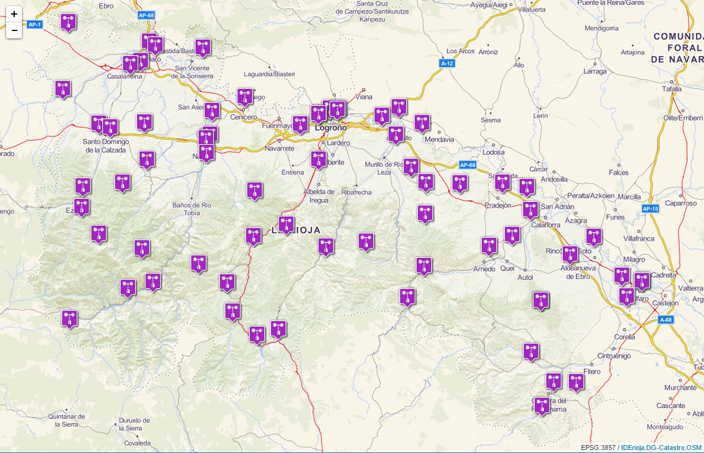

Configuración
Para configurar un mapa dentro de una página web, es necesario editar su código html de la siguiente manera:
- Declaración de la aplicación como HTML5 utilizando
<!DOCTYPE html>. - Creación de un
<div>denominado"map", en el que se visualizará el mapa. - Definición de las opciones del mapa, dentro de la variable
iderioja_config. - Inclusión del
<script>de la API js IDErioja.
Para la representación de la información almacenada en la Base de Datos Geográfica del Gobierno de La Rioja, IDErioja dispone de unos ficheros de configuración predeterminados denominados "Consultas", en los que se almacenan las referencias de los datos que se quieren representar, su simbología y atributos, así como su orden de presentación (opción: consulta).
Si se prefiere utilizar la API para la representación de datos geográficos propios o de terceros en lugar de los almacenados en IDErioja, la API dispone de funciones que permiten añadir al mapa datos de otras procedencias.
Código de ejemplo
Se presenta a continuación el código del fichero html para la representación de la consulta de IDErioja "4d4b792f6469754163366644435862454d7a314e47773d3d", correspondiente a las Estaciones de Medición de La Rioja.
<!DOCTYPE html>
<html>
<head lang="es">
<meta charset="UTF-8">
<title>Ejemplo de configuración popup</title>
<style>
body, html{
height: 100%;
border: 0;
padding: 0;
margin: 0;
}
#map{
width: 100%;
height: 100%;
}
</style>
</head>
<body>
<div id="map"></div>
</body>
<script>
var iderioja_config = {
"fondo_base": 800,
"capa_geojson": [
{"nombre": "CupCakes",
"url": "https://raw.githubusercontent.com/lyzidiamond/learn-geojson/master/geojson/cupcakes.geojson", // CupCakes
}
],
"popup": 2
}
</script>
<script src="https://apigeo.larioja.org/v1/iderioja.js"></script>
</html>
Salida gráfica

Opciones
| Opción | Tipo | Valor def. | Descripción |
|---|---|---|---|
| capa_geojson | array | (no) | Array de archivos GeoJSON con capas geográficas a visualizar. |
| capa_gpx | array | (no) | Array de archivos GPX (GPS) con puntos, recorridos y rutas a visualizar. |
| capa_kml | array | (no) | Array de archivos KML con capas geográficas a visualizar. |
| cluster_markers | [0,1] | 0 | Simbolización agrupada y dinámica de elementos puntuales y símbolos |
| consulta | texto | (no) | Especifica la consulta de IDErioja que se quiere utilizar |
| escala | [0,1] | 0 | Muestra una barra con la escala gráfica del mapa |
| estilo_hover | parámetros | Define la simbolización que se emplea para resaltar un elemento | |
| fondo_base | texto | "iderioja-base" | Especifica el fondo cartográfico o mapa base que se utilizará en el visor |
| ids | array | (no) | Elementos a representar entre los incluidos en una consulta IDErioja |
| init_lat | coordenada | 40.4169473 | Latitud del centrado inicial del mapa en coordenadas geográficas |
| init_lng | coordenada | -3.7035285 | Longitud del centrado inicial del mapa en coordenadas geográficas |
| leyenda | [0,1] | 0 | Muestra un botón leyenda de las capas utilizadas en una consulta IDErioja |
| localizacion | [0,1] | 0 | Ofrece un botón que muestra la localización geográfica del dispositivo |
| minimapa | [0,1] | 0 | Muestra un mapa guía en la parte inferior derecha del mapa principal |
| popup | [0,1,2] | 1 | Define cómo se visualizan los atributos de un elemento seleccionado |
| selector_capas | [0,1,2] | 0 | Configura la oferta y apariencia del selector de capas |
| tag_mapa | div | "map" | Establece el nombre del <div> en el que incrustará el mapa |
| zoom_inicial | [0-19] | 10 | Nivel de zoom inicial con el que se representará el mapa |
Métodos
Componentes
La API js IDErioja incorpora funcionalidades de las siguientes librerías y plugins de software abierto:
- Leafletjs v 0.7.7: Librería JavaScript open-source para la visualización de mapas interactivos.
- Leaflet.markercluster: Permite añadir a Leafletjs funcionalidades para el clustering dinámico de símbolos.
- leaflet.TileLayer.WMTS: Incorpora la posibilidad de añadir capas a partir de servicios WMTS.
- Leaflet.NonTiledLayer: Soporta peticiones a servicios WMS no tileados.
- leaflet-locatecontrol: Añade controles para la geolocalización del dispositivo.
- Leaflet.geojsonCSS: Permite aprovechar para la simbolización las posibilidades del formato Geojson CSS.
- leaflet-omnivore: Soporte de formatos CSV, GPX, KML, WKT, TopoJSON y Encoded Polylines. Incluye corslite.
- Leaflet.EasyButton: Ofrece la posiblidad de añadir botones en Leaflet de una forma sencilla.
- Leaflet-MiniMap: Control que permite añadir en una esquina un minimapa con funciones pan y zoom.
- Leaflet.fullscreen: Plugin para mostrar la visualización a pantalla completa (HTML5).
- leaflet-sidebar: Añade la posibilidad de configurar persianas laterales adaptativas (responsives).
Otras librerías JavaScript: